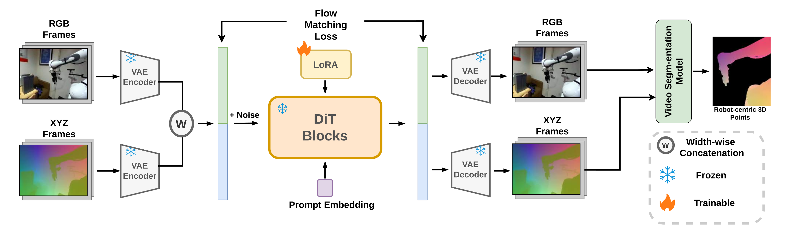
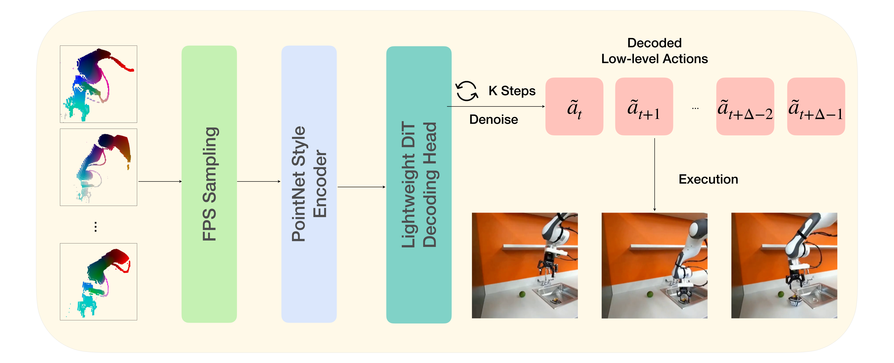
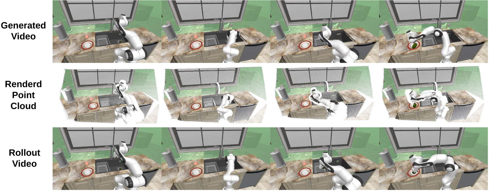

PointAction: 3D Points as Universal Action Representations
for Robot Control
arXiv 2026
- Mutian Tong†
- Han Jiang†*
- Qiao Feng
- Lingjie Liu
- Jiatao Gu

TL;DR: From an input image and instruction, PointAction jointly synthesizes consistent RGB frames and dynamic, pixel-aligned 3D point maps (XYZ). These 3D point dynamics serve as a generalizable, embodiment-agnostic action representation, bridging 2D video priors to robust visuomotor control.
Abstract
Vision-Language-Action (VLA) models have demonstrated strong manipulation capabilities, but frequently struggle with unseen tasks and environments. Recent Video-Action Models (VAMs) leverage physical and dynamic priors from pre-trained video diffusion models, achieving robust generalizability. However, existing approaches face two fundamental challenges: (i) grounding RGB-only rollouts into precise actions is inherently ambiguous because contact geometry and fine-grained spatial constraints are under-specified, and (ii) scaling to broad task and embodiment coverage remains bottlenecked by costly paired observation–action supervision. We present PointAction, a framework that bridges video predictions to robot actions via explicit point-based 4D modeling. We first fine-tune a foundation robot video model to jointly generate RGB frames and dynamic 3D pointmaps, and then map the predicted 3D point dynamics to executable robot actions through a diffusion-based decoder. Comprehensive evaluations show that PointAction achieves state-of-the-art 4D generation quality on robot scenes, outperforms existing VLA and VAM baselines on simulation benchmarks, and demonstrates cross-embodiment generalization to two real robot arms unseen during pretraining.
Method Overview
PointAction factorizes manipulation into an embodiment-agnostic 4D video–action model and an embodiment-specific point-to-action decoder. The 4D model is fine-tuned from a foundation robot video backbone to jointly generate RGB and XYZ pointmaps via width-wise latent concatenation, so each visual patch is paired with its geometric counterpart inside DiT self-attention blocks. A lightweight conditional DiT decoder then denoises the full action sequence from per-frame point features, with the initial robot state and diffusion step injected via AdaLN.

Stage 1: Universal 4D Video-Action Model. A foundation video diffusion model is lifted to jointly generate RGB and XYZ pointmaps by concatenating their VAE latents along the width dimension. We train with a flow-matching objective under diffusion forcing on cross-arm robot videos.

Stage 2: Point-to-Action Decoder. Robot-centric point clouds are downsampled with FPS, encoded by a PointNet-style MLP, and fed into a thin conditional DiT that denoises the action sequence in parallel.
Interactive 4D Generation Viewer
Drag, zoom, and replay our jointly generated RGB + 3D point trajectories directly in your browser. The four scenes below are drawn from DROID and BridgeData V2, the two datasets we pretrained our 4D video model on.
Underlying generated video and 3D point map for the selected scene (RGB | pixel-aligned XYZ pointmap)
Real-Robot Demonstrations
PointAction transfers to two robot arms that are unseen during 4D-video pretraining—a YAM arm and an xArm7. Switch between arms and tasks below; each task has two independent rollouts (Run 1 / Run 2).
Task
Take
4D Generation Quality
The action decoder relies on temporally and geometrically consistent 4D rollouts from the upstream video–action model. Below are qualitative rollouts on held-out trajectories from DROID and BridgeData V2, visualizing RGB frames, predicted XYZ pointmaps, and the pointmaps rendered as 3D point clouds across four timesteps.

Qualitative 4D generation by PointAction on real-world rollouts. Top: a held-out trajectory from DROID; bottom: a held-out trajectory from BridgeData V2. Columns are four uniformly sampled timesteps. Rows: (a) generated RGB frames, (b) generated XYZ pointmaps, (c) rendered XYZ as a 3D point cloud.
Simulation Rollouts on RoboCasa365
In simulation, PointAction reaches the highest average success rate across in-distribution, OOD-environment, and OOD-task regimes on RoboCasa365, outperforming both the strongest VLA baselines (GR00T N1.5, $\pi_0$) and VAM baselines (VPP, Cosmos Policy). Below: qualitative comparisons between predicted videos and actual physical robot executions.

Qualitative rollouts on RoboCasa365. Each row shows a different manipulation task. Predicted video frames (top) align spatio-temporally with actual physical executions (bottom).